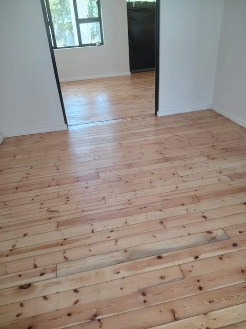
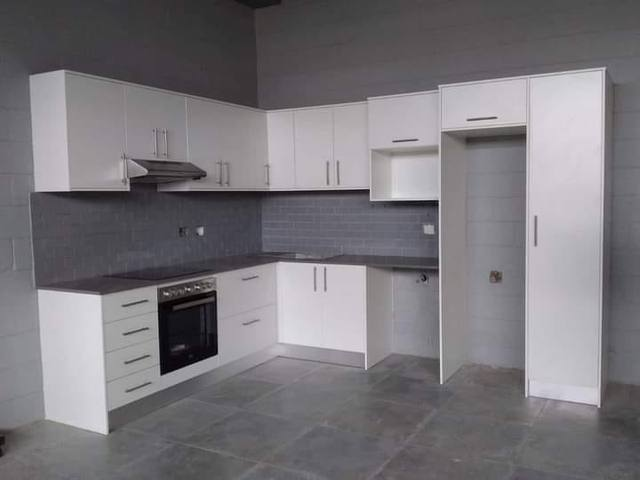

Renovation & woodworks in Pinelands
Pinelands was planned as a garden city, with 1940s–60s family homes on generous plots, big gardens and plenty of pools. Many original kitchens and built-ins are now due for replacement. We're often asked for sanding and sealing pine floors, replacing original kitchens with modern layouts, built-in cupboards for bedrooms and studies, and pool decks and garden decking.
Our work in Pinelands
Pinelands first, then more of our work.




Working in Pinelands
Pinelands was South Africa's first garden city, laid out from 1919 with winding, tree-lined streets, big gardens and green belts. The oldest houses include thatched cottages, and most homes date from the 1940s to the 1970s, with generous plots and many pools. Original pine and hardwood floors are common under old carpets, and our Pinelands photo shows one brought back: a pine floor sanded and sealed. Kitchens and built-ins from that era are now often due for replacement with more practical modern layouts.
Kitchens · Built-in cupboards · Doors & garage doors · Furniture · Decks · Renovations →
Questions from Pinelands
Can you replace an original kitchen in a Pinelands home?
Yes. We take out the old units, check the walls and plumbing points, and build and fit the new kitchen, with a fixed price agreed before we start.
Can you sand and seal an old pine floor in Pinelands?
Yes. We sand back to clean timber, fill gaps where needed and seal it. Pine is softer than hardwood, so we choose a finish that protects it.
Can you redo a 1960s kitchen without moving the plumbing?
Usually, yes. Keeping the sink and stove positions saves cost, and a new layout of cupboards can still make the kitchen work much better.